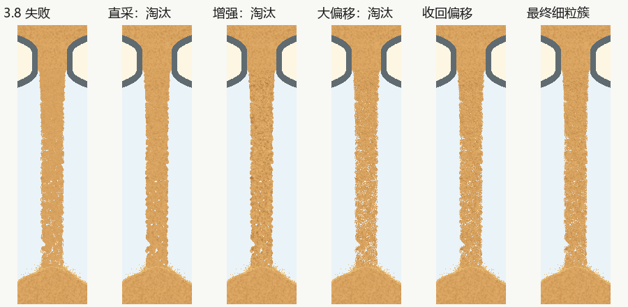
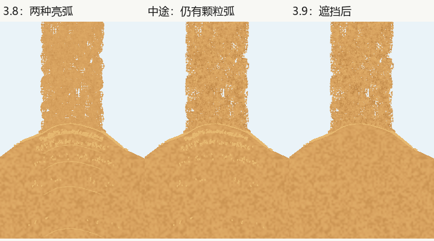

3.9：主动寻找反例后的结论
以“正常尺寸像细沙、运动连续、上下材质协调”为目标，尝试推翻完成结论。图像非空、粒子数正确、帧多和性能通过均不能代替外观判断。最终结论与源码身份见审核登记。
| 问题及等级 | 原证据 | 处理与复查 |
|---|---|---|
| P1：3.8仍有大圆团、条带/多孔平板感 | 同条件第8秒原图；直接复用材质与单纯增强明暗两个候选仍像圆石串。 | 拒绝两候选；每颗粒固定方向和局部偏移、真实尺度UV、去父级圆团。大偏移候选又因孔洞过多被拒绝，收回偏移后复查默认和粗细两端。 |
| P1：1秒堆内多道光滑亮弧 | 3.8高分短周期原图；关闭闪光的诊断图使光滑亮弧消失。 | 过滤完全埋住的闪光，测试坡面外仍可见角不被提前裁掉；暂停继续用同一时钟。 |
| P1：仅修闪光后仍有多道颗粒亮弧 | 首轮正式3.9被独立动态审核拒绝；关闭飞溅颜色的诊断消除剩余亮弧。 | 新增失败用例后，只调整两条飞溅绘制路径的可见尺寸，物理数组不变；重新采集全部正式图像和录像，高分1秒及相邻落点不再复现堆内多道亮弧。 |
| P1：材质为空时可能画白色粒子 | 有Mesh能力、缺材质的模拟首先失败。 | 新绘制上下文创建前检查材质，沿原故障回退保留Line；材质存在但Mesh失败另有独立反例。最后再冻结源码重采，未给旧数据更换源码摘要。 |
| P2保留：5秒初始沙堆上升较快 | 5秒首次落地的连续解码帧，旧3.8同样存在；首帧已有小堆，随后约一帧上升明显。 | 本轮保留原沙量/堆积模型，未改此既有表现，未称完整应用视觉无问题。后续应单独评估短周期体积到形状的过渡。 |
| P3保留：整体近竖直、局部细孔与当前堆面亮边 | 正常尺寸默认与粗细端点、实际连续窗口。 | 无整束软管摆动、大圆团串、整宽空层的新反例；不为追求宏观扭曲重新引入人工波浪。 |


独立角色分别核查源码与发布边界、取证身份、动态与正常尺寸画面。动态审阅采用关键连续窗口而非声称完整播放；原始动态结论保留已知不足及未检查项。完整原始帧、轨迹、性能样本、拒绝证据和测量源码在本页同目录证据包内。
源码限定：除材质渲染器及版本外，主程序只允许闪光保留条件和精确抽取的飞溅绘制片段变化；还原这两处后的AST须与已发布3.8一致。55组阶段比较核对物理数组、沙量与几何，埋住的闪光只允许减少。原3.7出口膨胀及旧粗档实心杆负例继续必须被拒绝。
未检查：Android、音频、实屏帧率、10小时全程、所有颜色全程。最终PC材质与相邻连接范围内没有未关闭P0/P1阻挡；P2保留项不被消除或改为通过。